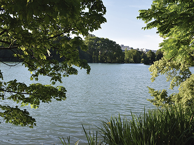

Aquest parc està situat entre els límits de Lió i de Villeurbanne. Es va obrir l’any 1857 i és una obra dels germans Eugenio i Denis Bühlef. És el parc més gran de la ciutat, i ambles seves gairebé 120 hectàrees és un dels més grans de tota França. Conté una immensa àrea verda, un llac artificial, un hivernacle destinat a la cultivació de roses i fins i tot té un zoo completament gratuït. És un lloc ideal per fer un pícnic gaudir del sol, passar un dia en família, anar de passeig o fer esport.

Parc de Gerland
El parc de Gerland va ser inaugurat l’any 1996, el va crear el paisatgista i arquitecte Michel Corajoud. Té unes 80 hectàrees dedicades al lleure, a les activitats i al descobriment de la flora, en aquest parc hi ha més de 300 espècies de plantes. Està situat al voltant d’un prat al costat del riu Roine. També hi podem trobar grans àrees de joc, un skatepark i un jardí botànic anomenat Megaphorbiaie.